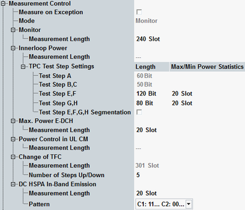

The "Measurement Control" parameters configure the scope of the WCDMA TPC measurement.

Specifies whether measurement results that the R&S CMW identifies as faulty or inaccurate are rejected. A faulty result occurs, for example, when an overload is detected or when the RF receiver is underdriven. In remote control, the cause of the error is indicated by the reliability indicator.
- Off: Faulty results are rejected. The measurement is continued; the statistical counters are not reset. Use this mode to ensure that a single faulty result does not affect the entire measurement.
- On: Results are never rejected. Use this mode, for example, for development purposes, if you want to analyze the reason for occasional wrong transmissions.
Indicates the measurement mode resulting from the currently selected TPC setup.
- "Monitor" for TPC setups: closed loop, alternating, all 1, all 0, single pattern alternating, single pattern all 1, single pattern all 0, continuous pattern, phase discontinuity up, and phase discontinuity down
- "Change of TFC"
- "Max. Power E-DCH"
- "Inner Loop Power Control" for TPC setups: TPC test step ABC, E, F, EF, GH,
- "UL Compressed Mode"
- "In-Band Emission" only applicable to dual carrier HSUPA measurements
Defines the number of slots to be measured in "Monitor" mode.
Remote command:Controls measurements in "Inner Loop Power Control" mode.
Displays the number of slots to be measured in "Inner Loop Power Control" mode. The value depends on the selected TPC setup and the test step settings.
Remote command:This parameter is only available while the combined signal path scenario is active.
If it is enabled, starting or restarting the measurement in measurement mode "Inner Loop Power Control" triggers the execution of the TPC setup by the signaling application.
Remote command:The table lists settings for the individual inner loop power control test steps.
Test steps A, B, and C are defined by 3GPP. The corresponding TPC bit patterns are fixed and the number of TPC bits per step is displayed as "Length".
For test steps E, F, G, and H the number of TPC bits per test step is configurable. Example: "Test Step E,F" = "120 Bit" means that 120 zero bits are sent for step E and 120 "1"- bits for step F. It results in a measurement length of 241 slots for test step EF, so that all power steps are measured. While the combined signal path scenario is active, these parameters are controlled by the signaling application.
The second column defines the number of slots at the end of a test step, where the minimum output power or maximum output power results are measured. Example: 120 bits and 20 slots are defined for test step E. It means that 121 slots are measured for the test step. The last 20 slots of these 121 slots are used to measure the minimum output power.
For the test steps E, F, G, and H segmentation can be enabled via a checkbox. If you use the WCDMA signaling application (combined signal path), the setting is controlled by the signaling application.
In the standalone (SA) scenario, these parameters are controlled by the measurement. In the combined signal path (CSP) scenario, they are controlled by the signaling application.
Controls measurements in max. power E-DCH mode.
This parameter is only available while the combined signal path scenario is active.
If it is enabled, starting or restarting the measurement in measurement mode "Max. Power E-DCH" triggers the execution of the TPC setup by the signaling application.
Remote command:Controls measurements in "UL Compressed Mode".
Displays the number of slots to be measured in "UL Compressed Mode" mode. This value is fixed. The measurement interval includes two compressed mode frames plus one preceding and one succeeding frame.
Remote command:This parameter is only available while the combined signal path scenario is active.
If it is enabled, starting or restarting the measurement in measurement mode "UL Compressed Mode" triggers the execution of the "TPC Test Step UL CM" setup by the signaling application. In particular, it sets target power, selects UL CM trigger, activates the selected UL CM test pattern, and resets target power afterwards.
Remote command:Controls measurements in change of TFC mode.
Displays the number of slots to be measured in "Change of TFC" mode. The value is calculated from the configured "Number of Steps Up/Down", assuming alternating up/down power steps with 30 slots between subsequent steps.
Remote command:Defines the number of power steps to be measured per step direction (n up steps + n down steps).
Remote command:Controls measurements in in-band emission mode. These settings are only available in dual carrier HSUPA measurements.
Option R&S CMW-KM405 is required.
This parameter is only available while the combined signal path scenario is active.
If it is enabled, starting or restarting the measurement in measurement mode "In-Band Emission" triggers the execution of the TPC setup by the signaling application.
Remote command: